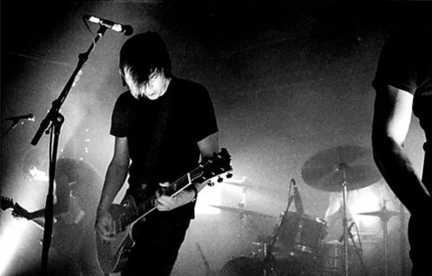

Limited Press Stories
We talk with the Failure frontman about his bands, his solo album and his work as a producer and engineer
Failure went almost 20 years between albums. Why?
We broke up in ’97 amid some serious drug problems, and it was a tragic breakup. I don’t know if we were peaking or if we were just getting into a good place creatively, but people were starting to get to know the band and we were building our following. … [Then] we had these personal issues that kind of swamped everything.
Were you at all surprised by the reaction to [June comeback album] The Heart Is a Monster from the press and fans?
I was. We had kind of hoped for that, but we didn’t really think it was going to be so across-the-board positive. Almost all of the reviews that I read, people really seem to understand the connection to the past albums. We didn’t want to completely reinvent the band, but we also didn’t want to make a clone of [1996’s] Fantastic Planet. … We wanted to keep the band’s sound intact, but we’ve all grown as musicians and we have so much experience since we made that album that this is just the natural progression for us.
Andrews on his solo tour in 2014
Fantastic Planet wasn’t a huge success when it came out, but it’s become something of a cult record following the band’s breakup. Did you feel pressure not to spoil your legacy with a bad record?
Yeah, that was something we talked about really early on, that if we’re going to get back to together we don’t want to take a victory lap; that feels silly. We were kind of known for making pretty cool, innovative records and [we didn’t want to] tarnish that by doing something silly like going out and only playing the old songs. … I feel like we can mix up the old songs with the new songs, and if we don’t play all the old songs people aren’t bummed out. They’re hungry to hear the new album just as much.
Do you think Failure’s style of alternative rock has come back into prominence, to the point where there are enough fans to sustain it?
I do sense that people are starting to appreciate bands that really play and really spend some time crafting their sound and performances. I don’t know if that’s because things have a cyclical way or if that’s because what is being called “alternative” is pretty electronic-tinged right now. When a band like Failure works, everything is really played, and there’s a performance aspect to it, and I think that’s appealing to the younger kids—it just seems fresher and newer to them than what they’ve been hearing on the radio for the last few years.
How much of your recording is done live or full-band?
On the albums we pretty much play it all live; I generally overdub the vocals, and we’ll go back and fix any mistakes on guitars.
So that’s probably 60, 70 percent. And then there’s other tracks, like “I Can See Houses,” that are very labor-intensive and have a lot of overdubs
and a lot of keyboards.
The actual genesis for most of the songs on all of our albums, especially this new album, comes from what I call “jam tapes,” where the three of us get
in a room and just improvise for two to three hours at a time, and we’re rolling tape the whole time. Then we go back and listen to those when we’re in the studio,
ready to actually record and put the album down. We reference those jam recordings and we sift through them and find little moments where there’s something we really like,
where something pricks our ears up, like, “Wow, it’s cool how the bass is doing that against the guitar.” It’s generally stuff that you would never be able to sit down
and write as one person or even as a band if you were to methodically write it.
Basically the recording of the songs is structuring those ideas and getting it formed, honing in on the sounds and trying to perfect those.
You’ve also had a successful career as a producer and mixing engineer. How different is producing another band’s songs from working on your own?
It’s not that different, surprisingly. If I’m in the band, maybe a little quicker to get through a song, because there’s less talking about stuff.
It’s not like I’m doing it by myself in Failure—it’s still a band—but because I’m producing it, it cuts out a middle man and streamlines the process.
But really, it’s quite similar—you still have personalities, and people are making the music, so you have to have your psychologist hat on.
I even have to use it on myself sometimes. Just knowing when to leave something alone for a while is one of the hardest things to learn.
If there’s a problem and you’re trying to solve it, at a certain point you’ve just got to put the guitar down and maybe leave the studio.
And for a lot of band people, that’s hard to do, because they tend to be strong-willed, including myself.
Andrews in his Los Angeles Studio
Do you ever feel underappreciated for how influential you were and how much credit you’ve received?
I would say we definitely did feel unappreciated in the ’90s. There was kind of a disconnect, especially with the press,
because we were coming out at the height of grunge, and we didn’t fit that genre perfectly. We had elements of it that people could grasp onto,
but then we had other elements that were just throwing them for a loop. We got called “grunge-light,” we got called a lot of things back then,
and it was a bummer, because we felt like we were doing something that was good and maybe even trying to push the envelope a little bit.
And we felt like people didn’t want that; people wanted to just go with the flow, and that was tough.
Then you cut to now, and I’ve never felt this musically understood in my entire career. Just reading the reviews and fans talking online,
it’s a whole different thing now. People who like Fantastic Planet, whether they came into it from the ’90s or discovered it a year ago,
they really understand that record. They get it, and they’re not trying to compare it to anything anymore. Then to have the new record come
out and have people understand how it relates to Fantastic Planet and why it’s different, it’s a big deal for us. It’s really inspired us
to do this whole reboot.
So are you guys back 100 percent? Is Failure a full-time band again?
Pretty much. We’re not doing, like, 300 shows a year. I’ve got two kids and a family, and I don’t like to be gone for more than three weeks at a time, but we’ve done more than 100 shows since the reboot, we made this record and we’ve got a second video coming out. So yeah, we’re going for it.